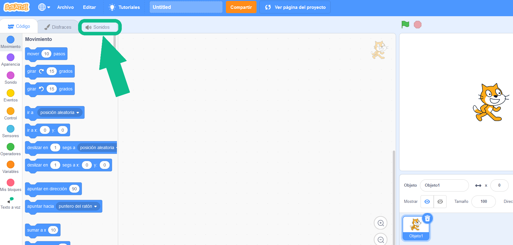
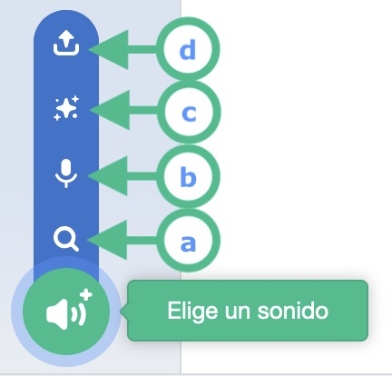
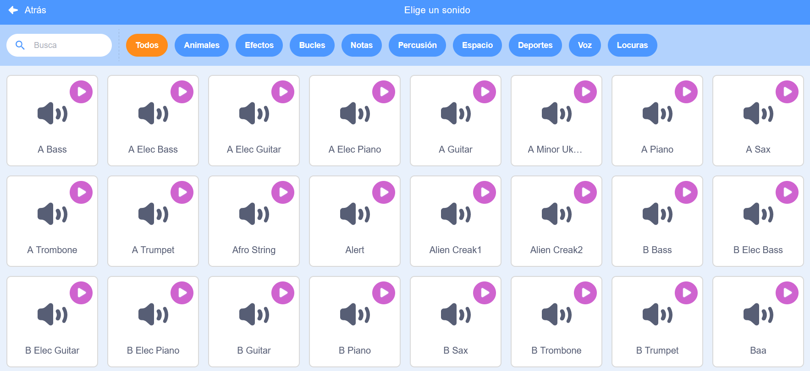
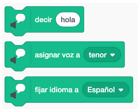
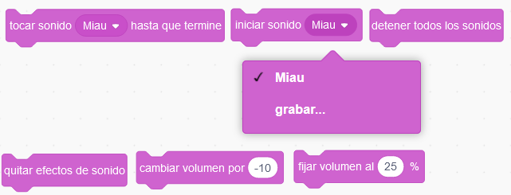
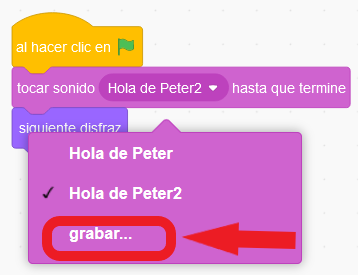

Para contar una buena historia a un compañero o compañera, que sea realista y verosímil, no podían faltar los sonidos, que representan a los personajes y ambientales.
Nos toca ambientar con sonidos de fondo, asignación de voces a los personajes, con el que estamos construyendo la historia.
Eligiendo sonido
Vas a aprender a seleccionar sonidos, para nuestra historia.
Menú de la pestaña sonidos
Desde este menú podemos elegir, editar o cargar sonidos desde el propio Scratch o desde el ordenador. Recuerda que los objetos pueden tener asignado un sonido y si no tienen puedes asignarles uno.

Elige un sonido
Aquí puedes ver todas las opciones, colocando el ratón sobre el icono circular, que tienes para cargar un sonido.
a. La lupa sirve para elegir los sonidos tematizados, que Scratch trae de serie.
b. El micrófono sirve para grabar nuestro propio sonido.
c. La estrellita para seleccionar sonidos al azar de la propia herramienta.
d. La opción superior sirve para cargar sonido captado con un micrófono o descargado desde internet.
La mayoría de las veces cargaremos sonidos pulsando directamente sobre el círculo con el altavoz.

Galería de sonidos de Scratch
Observa que están organizados por temáticas, puedes verlos todos o puedes pulsar en la temática animales, efectos,...

De texto a voz
Una manera muy interesante de crear un diálogo en Scratch es hacerlo aún más real añadiendo voces a los personajes. Mediante la extensión "Texto a Voz" podemos reproducir textos a través del audio del ordenador.Añadir Voz
En este video se muestran cómo podemos añadir y grabar voz a nuestros objetos de Scratch.
Seguro que al ver estos dos videos se te han ocurrido muchas ideas para tu proyecto. Pues venga, ¡a programar!
Bloques sonido
Existen dos formas de incluir sonidos a nuestro programa, asignándoles voces a nuestros personajes.
- Por medio de la extensión de texto a voz, que hace que los bocadillos del texto sean reproducidos por el ordenado pronunciando el contenido del bocadillo, asignado un tipo de voz y eligiendo el idioma.
- Por otro tenemos los bloques del conjunto de sonido, entre ellos veremos tocar sonido "Miau" hasta que termine, iniciar sonido, grabar nuestra propia voz, detener todos los sonidos, entre otros.
| Bloques de texto a voz | Bloques de sonido |
 |
 |
Algo importante de los sonidos
Observa que de los objetos que has cargado, para la historia, cada uno de ellos tiene un sonido asociado y si no lo tiene o lo has creado desde cero puedes grabarle o añadirle uno desde la galería de sonidos de Scratch.
Pulsa sobre la bandera verde. ¡Inclúyelo tú!.
Lumen dice ¿Necesitas ayuda para el programa?
Este bloque del evento sonido permite grabar sonido usando el micrófono del ordenador.
